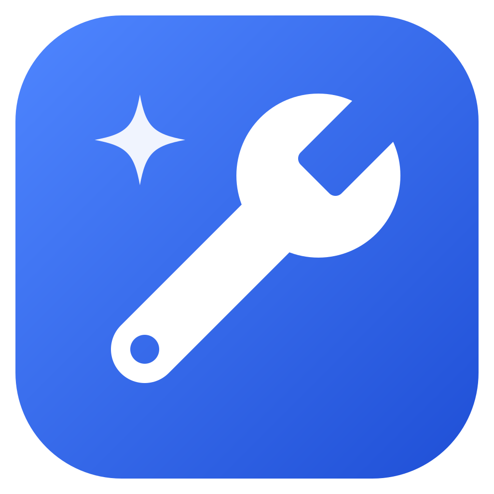

Cja’s Tools
Version · 171 free tools for everyday jobs
Your files stay on your device
Every tool works inside this window. Photos, PDFs, videos, recordings and text are never uploaded anywhere, so they are as private as the computer or phone you are using.
- No account, no sign-in, no ads.
- No tracking or visitor counting of any kind.
- A few choices, such as light or dark colours and items you save in some tools, are kept on this device only. Clearing the browser’s site data removes them.
When the internet is used
- The desktop app works with no internet at all, except the few tools whose job is to fetch something live: exchange rates, and the currency converter’s latest rates.
- On the website, the video tools download their video engine once (about 32 MB) from the jsDelivr network, and the browser then keeps it.
- Check for a newer version, below, asks GitHub for the latest version number — only when you press it.
Get the app, or the newest version
Something not working?
Please say what you did and what happened, on the problems page. Press / on any page to jump to the search box.
Made in Sri Lanka by Chamindu Janodya Ambawatta.
Licences
Cja’s Tools is free and open source under the MIT licence. It also includes these free libraries and fonts by others, unchanged:
| pdf-lib | MIT — making and changing PDFs |
| PDF.js | Apache 2.0 — showing PDFs and reading their text |
| FFmpeg (ffmpeg.wasm) | GPL 2 or later — video and sound. Its source and exact build are listed in THIRD-PARTY.txt |
| jsQR | Apache 2.0 — reading QR codes |
| qrcode-generator | MIT — making QR codes |
| Noto Sans Sinhala, Tamil | SIL Open Font Licence — subtitles in Sinhala and Tamil |
Source code: github.com/chami123jano/cjas-tools